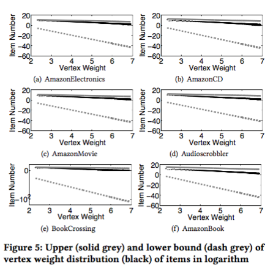
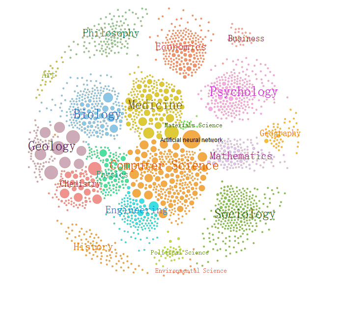

|
|
Lingkun Kong
Hi, my name is Lingkun Kong. I am now a Ph.D. student, advised by Konstantinos Mamouras, at the Department of Computer Science, Rice University.
Before I joined Rice, I got my bachelor degree from Shanghai Jiao Tong University and was a member of Zhiyuan College.
CV /
Blogs /
GitHub /
LinkedIn
|
|
Find Me
| Email |
klk[at]rice[dot]edu
|
| Address |
Duncan Hall 3011,
6100 Main St. MS-132,
Houston, TX, 77005.
|
|
|
Education
Rice University, USA, from Aug. 2018 until now.
Department of Computer Science
Shanghai Jiao Tong University, China, from Sep. 2014 to Jun. 2018
B.Sc., Department of Computer Science & Zhiyuan College
Cornell University, USA, from Jun. 2017 to Aug. 2017
Visiting Student, Computer Science Department
|
|
Publication
Junqin Huang, Lingkun Kong, Linghe Kong, Zhen Liu, Zhiqiang Liu and Guihai Chen. "Blockchain-based Crowd-sensing System". IEEE HotICN International Conference, 2018. [PDF]
L. Fu, S. Ma, L. Kong, S. Shi, X. Wang, "FINE: A Framework for Distributed Learning on Incomplete Observations for Heterogeneous Crowdsensing Networks", in IEEE/ACM Transactions on Networking, Vo. 26, No. 3, pp. 1092-1109, June 2018. [PDF]
|
 |
A Simulator for Market Analysis Under Bancor Protocol
Lingkun Kong, Emin Gun Sirer, Jan. 2018
This work is advised by Prof. Emin Gun Sirer.
Bancor holds the record for the biggest crowd-funding, ever, in the history of mankind. However, the robustness and efficiency of Bancor remain to be explored. Bancor also has several flaws due to its design principle.
Therefore, we build a simulator, and leveraging which, we find that Bancor protocol is flawed in three aspects:
- The existence of problem about "Double Coincidence of Wants" Bancor wants to solve is unsubstantiated in real world. Even assuming this problem does exist, Bancor protocol cannot ensure its superiority to classic market.
- The price of smart token, i.e. currency in Bancor protocol could fluctuate significantly, since Bancor neglects potential human behavior.
- Bancor protocol is faced with severe cancellation of concurrent transactions under limited order.
|
|  |
Evolving Bipartite Model Reveals the Bounded Weights in Social Networks: A Case Study in Recommendation Networks
Lingkun Kong, Xudong Wu, Hongru Zhu, Luoyi Fu, Xinbing Wang, Guihai Chen, Nov. 2017
This work is advised by Prof. Luoyi Fu and Xinbing Wang.
Many realistic social networks can be presented by evolving bipartite graphs, in which dynamically added elements are divided into two entities and connected by links through these two entities, such as followees and followers in Twitter networks, authors and scientific topics in scholarly networks, users and items in recommendation networks, and etc. However, when adding weights of edges, i.e., connections between elements, how to mathematically model such evolving social networks, along with quantitative characterizations, remains unexplored.
Motivated by this, we develop a novel evolving bipartite model (EBM), which, based on empirically validated power-law distribution within multiple realistic social networks, discloses that the distribution of total weights given or received by each element in networks is determined by the weighting scale and bounded by certain ceilings and floors.
|
 |
MSM: A Multi-entity Scholarly Model for Systematic Understanding of Evolving Scholarly Networks
Lingkun Kong, Fengyu Deng, Jiaqi Liu, Jinghao Zhao, Luoyi Fu, Xinbing Wang, Oct. 2017
This work is advised both by Prof. Luoyi Fu and Xinbing Wang.
Scholarly networks contain massive scholarly information that can be mainly categorized into three entities, i.e., paper, author and topic, which exhibit a co-evolution over time.
Though scholarly networks have attracted much attention over the past years, most works focus on single dimension of the network, e.g. citation, collaboration or topic network; while few of them incorporate different kinds of entities into an entirety to generate a systematic understanding of scholarly networks at scale. We bridge this gap by proposing a multi-entity scholarly model (MSM) with succinct theoretical foundation, which amalgamates entities of paper, author and topic into one single framework to simulate interactions among different entities, and thus presenting the co-evolution within scholarly networks.
|
|  |
Acemap: Academic Map System
Lingkun Kong, advised by Prof. Xinbing Wang, 2015 - 2017
I joined the Acemap group in 2015. My major work in this group focused on:
- Develop visualizing applications for scholarly information networks and presentation approaches.
- Implement the recommending algorithm for papers in Acemap, and present the result on website.
- Build and maintain the server and the back-end for Acemap.
|
|
Scholarships
National Scholarship, Ministry of Education of China, 2015 and 2017
Scholarship of Outstanding Undergraduates, Shanghai Jiao Tong University, 2017
Zhiyuan Honorary Scholarship, Shanghai Jiao Tong University, 2015, 2016 and 2017
|
|
Awards
Junzheng Scholar, Shanghai Jiao Tong University, 2017
Merit Student of Shanghai Jiao Tong University, Shanghai Jiao Tong University, 2015
|
|
More About Me
I used to be a table tennis athlete. In 2016, I helped my undergraduate university to win her first championship in Shanghai.
I am a crazy NBA basketball fan. Playing basketball is also one of my hobbies.
|
|